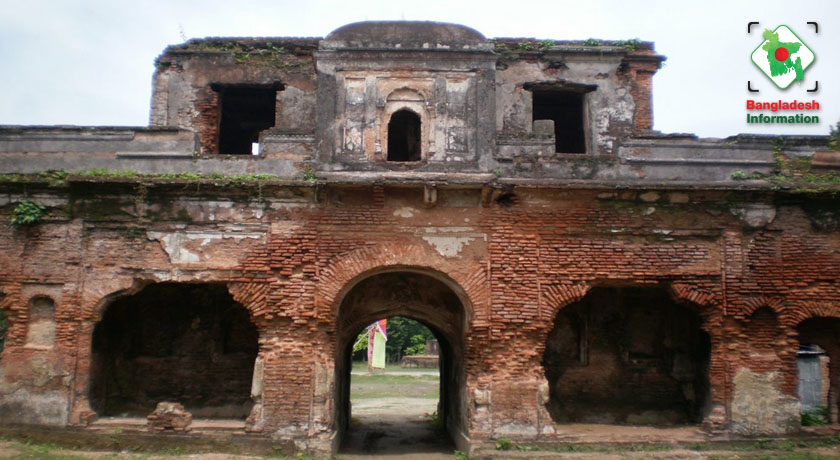
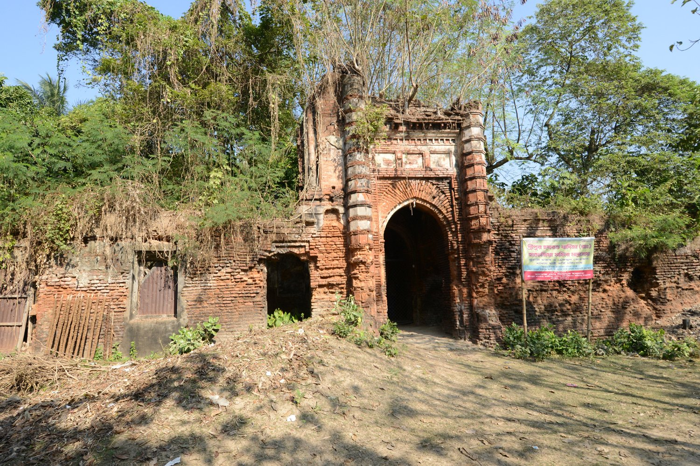
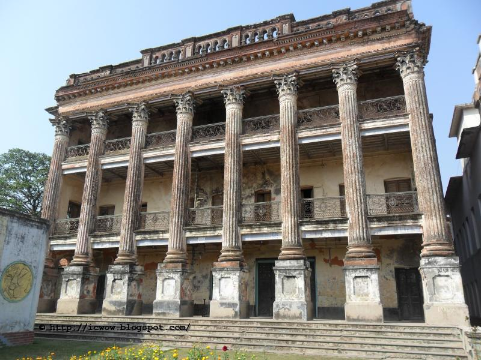
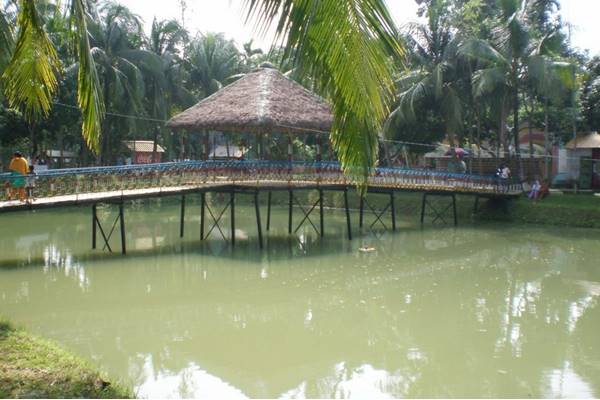
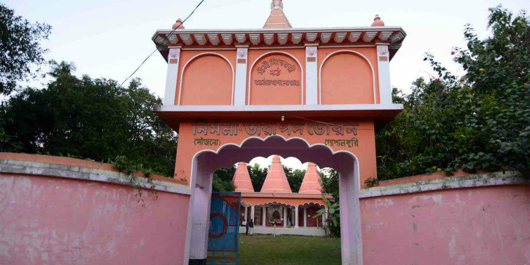

28 km from Magura Sadar, the house of Raja Sitaram Ray is located in Mohammadpur sub-district. Raja Sitaram Ray was an independent king. He rebelled against the Mughal rule and established a short-lived Hindu territory in Bengal. Besides this landmark, there are nine more landmarks listed in Magura. There's also one attraction listed in this district in other categories. You will find the exact location of Raza Sitaram Palace on the map above.
Ichakhada Neelkuthi is located at Ichakhada, Magura Sadar, Magura. Besides this landmark, there are nine more landmarks listed in Magura. There's also one attraction listed in this district in other categories. You will find the exact location of Ichakhada Neelkuthi on the map above.
Sreepur Jomidar Bari is located at Sreepur , Magura. Besides this landmark, there are nine more landmarks listed in Magura. There's also one attraction listed in this district in other categories. You will find the exact location of Sreepur Jomidar Bari on the map above.
Arpara Eco Park is located at Arpara, Shalikha, Magura. This is the only nature attraction listed in Magura. There's also ten attractions listed in this district in other categories. You will find the exact location of Arpara Eco Park on the map above. If you need any other information on Arpara Eco Park that is not listed here.
Siddheshwari Moth is located at Athara Khada, Magura Sadar, Magura. Besides this landmark, there are nine more landmarks listed in Magura. There's also one attraction listed in this district in other categories. You will find the exact location of Siddheshwari Moth on the map above.
Next page for more information